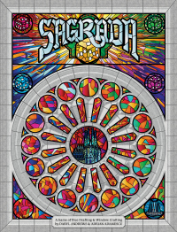
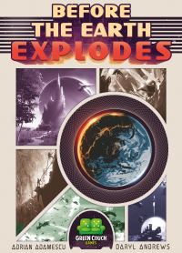
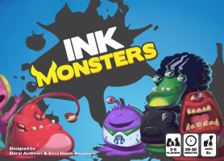
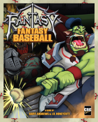

Sagrada
KS Funding: $151,946 (2981 backers)
"What a charming, lovely little puzzle of a dice game. Very, very likable… this game purrs, it is a well oiled machine. A lovely, fun, light, perfect family-friendly dice puzzler that is just a blast" - Richard Hamm (Rahdo Runs Through)
"It's one of those perfect family games you can teach in 5 minutes" - Lance Myxter (Undead Viking)
Boardgamegeek Page Kickstarter PageBefore the Earth Explodes
KS funding: $10,799 (427 backers)
"The art is amazing. The feel of the game is super cool. It plays very fast. This has very tactical decisions to be made for an overall strategic goal." - Chris Kirkman (The State of Games)
"I like that there are a variety of ways to win, even in this compact, quick-playing game. You really do get to pick which of the 4 Xs (Explore, Expand, Exploit, Exterminate) you want to focus on—but you have to mix it up so that your opponent doesn’t guess what you’re up to." - Jonathan Liu (Geek Dad)
Boardgamegeek Page Kickstarter PageInk Monsters
KS funding: $13, 077 (439 backers)
"A great family game to get younger kids into card drafting, set collecting and hand manipulation. Cute, fun art to boot!" - Tyler Anderson (Bearded Meeple)
"Ink Monsters has fun decisions, clever scoring, and fantastic art. My family will enjoy this one for a long time!" - Lance Myxter (Undead Viking)
Boardgamegeek Page Kickstarter PageFantasy Fantasy Baseball + Fantasy Fantasy Football

KS funding: $27, 844 (667 backers) combined stats
"Fantasy Fantasy Baseball is a really clever mash-up of both genres. It’s quick, full of fun and challenging decisions and finds the right balance between sport and sorcery to remain appealing to a wide audience." - Stephen Conway (The Spiel)
"Fantasy Fantasy Baseball captures the fun of assembling your team while throwing in some unpredictable magic. A great combination!" - Sean Jacqueman (The Daily Worker Placement)
Fantasy Fantasy Baseball Boardgamegeek Page Fantasy Fantasy Football Boardgamegeek PageFantasy Fantasy Baseball Kickstarter Page Fantasy Fantasy Football Kickstarter Page